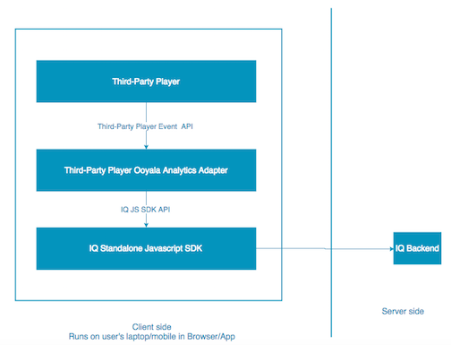

Use the new Ooyala IQ JavaScript SDK to communicate your third-party
player's events to Ooyala IQ. You must integrate this SDK
with your player for IQ to work. The JavaScript SDK only
supports web-based platforms that support JavaScript. Use the Ooyala IQ JSON
API for devices that do not support JavaScript or the Ooyala IQ SDK for
Roku for Roku devices.
Events
Ooyala IQ needs to receive information about player events to
properly display analytics data. The figure below shows the flow of when each player
event should be recorded.
- setDeviceInfo: Called once to setup the device information.
- setPlayerInfo: Called once to setup player information.
- reportPlayerLoad: Called when the player is created
(loaded).
- initializeMedia: Measures when a piece of video content is
loaded and displayed within the player before it gets played (if a pre-roll ad
is present, this should not be captured until the pre-roll ad is complete and
the main video loads). This is called whenever the loaded video changes, also
when the player goes to the next video in a playlist, for example.
- setMediaDuration: Called after the media is initialized.
- reportPlayRequested: Measures when the play button is
triggered either manually or automatically. The requested content could be ad
content or the actual video content.
- reportPlaybackStarted: Called when the media has successfully started
playback.
- reportPlayHeadUpdate: Called when the video playhead
moves. This event is reported periodically (at least every 2 to 3 seconds).
- reportPause: Called when the video is paused.
- reportResume: Called when the video is resumed after it has been
paused.
- reportSeek: Called when the viewer seeks through the video, jumping from
one time in the video to another.
- reportReplay: Called when the video is replayed.
- reportComplete: Called when the full length of the video was played.
- reportCustomEvent: Called whenever you want to report custom events to
Ooyala IQ.
Note: At this time custom events can be ingested, but we can only
store the information. Ooyala IQ is not able to process custom events, and
you will not be able to access this information from the Ooyala IQ backend.
However, you may wish to start sending Ooyala IQ your custom events now so
that you have the data there for when custom events are supported by Ooyala
IQ.
Additional Data
Ooyala IQ also collects the following data from the player for analytics purposes:
- Device information (setDeviceInfo): the device's unique identifier,
which is generated if not set, the browser used to load the player, the
browser version, the operating system, the device type (like, mobile or
desktop), the device's brand and model. This information is used for the
Device Panel in IQ.
- Player information (setPlayerInfo): the player's unique identifier,
player name and player version.
JavaScript SDK
The JavaScript SDK is the file analytics.js and is hosted at https://analytics.ooyala.com/static/v3/analytics.js. You can view API
documentation for the SDK at https://docs.brightcove.com/apidocs-ooyala/iq_standalone/index.html.
The following diagram shows the architecture for any third-party player integration
with Ooyala IQ (where Player is the third-party player).
